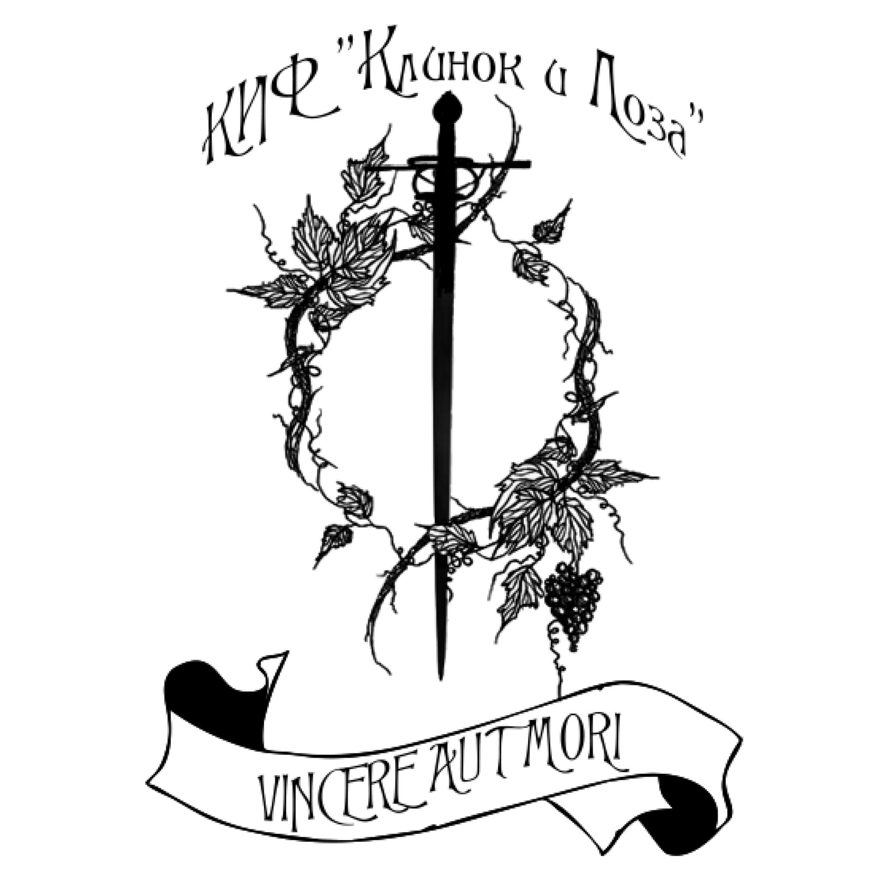
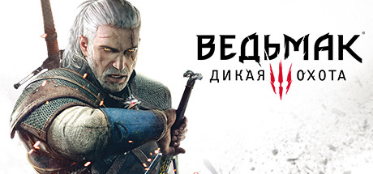
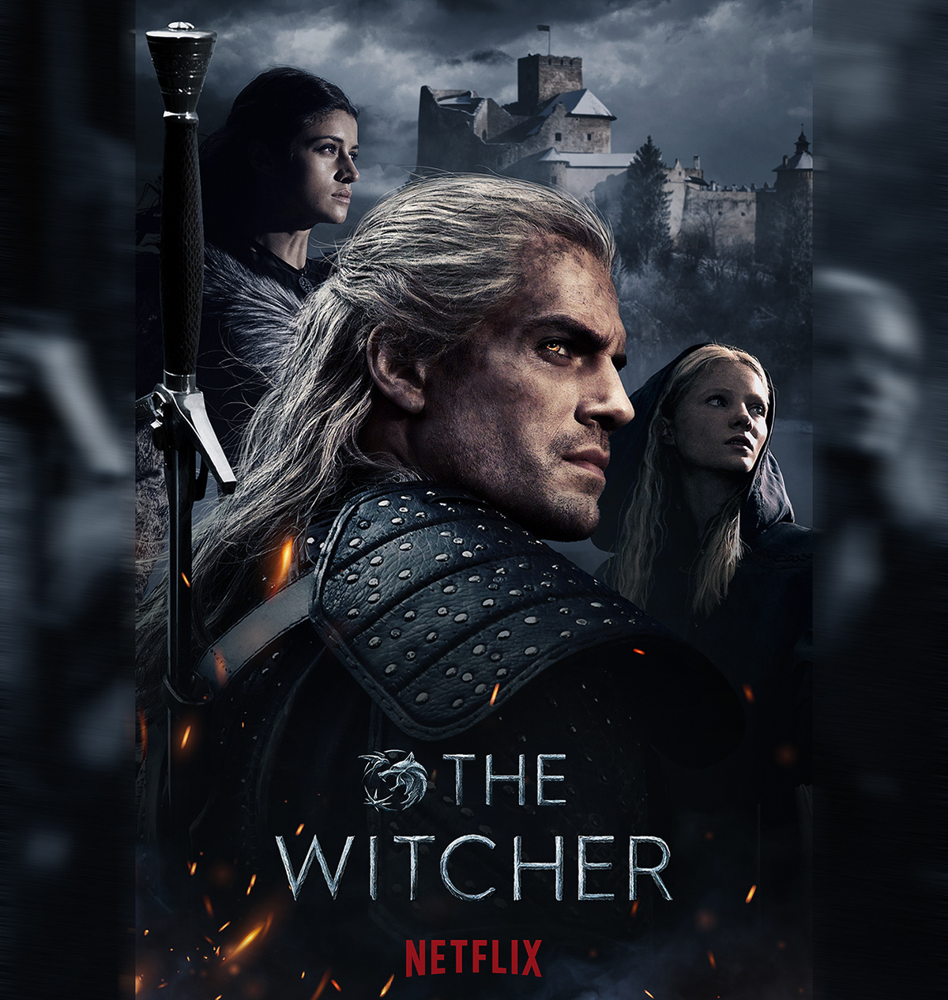
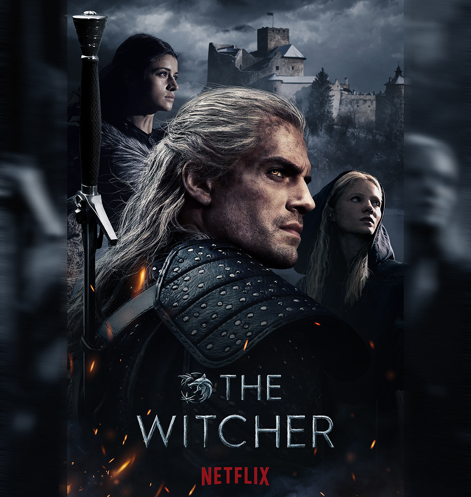
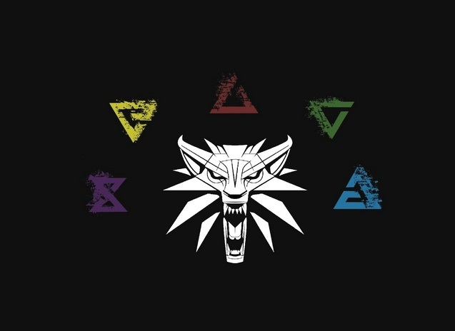
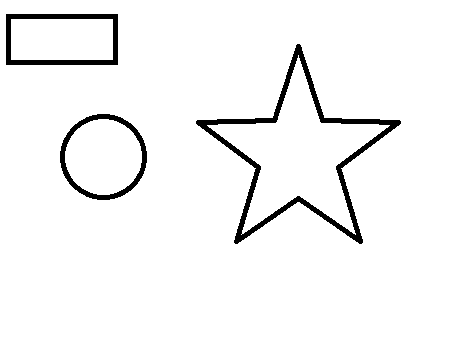

Первый рассказ цикла увидел свет в 1986 году, а последняя книга — в 2013. Действие книг происходит в вымышленном Мире «Ведьмака» (англ. Neverland или англ. The Continent), напоминающем Европу времён позднего средневековья, где рядом с людьми существуют разного рода волшебные существа и чудовища.
Геральт из Ривии — один из последних «ведьмаков», бродячих охотников на чудовищ. В то время как первые книги цикла представляют собой сборники рассказов о приключениях Геральта, нередко сатирически обыгрывая фольклор и классические литературные сказки, сюжет последующих книг представляет собой более масштабную историю, построенную вокруг Геральта и его воспитанницы Цири, обладающей сверхъестественными способностями. По мотивам произведений сняты два сериала — польский (2002) и американский (2019), и фанатский фильм «Полвека поэзии спустя»; выпущены компьютерные игры: («Ведьмак», «Ведьмак 2: Убийцы королей» и «Ведьмак 3: Дикая охота»); написана и поставлена рок-опера; на родине писателя издавались комиксы о похождениях Геральта и других героев его саги.
«Ведьма́к» (англ. The Witcher, польск. Wiedźmin,) — компьютерная ролевая игра, разработанная польской компанией CD Projekt RED по мотивам одноимённой серии романов польского писателя Анджея Сапковского. Релиз игры на платформе Windows состоялся 24 октября 2007 года — в России, 26 октября — в Европе и 30 октября 2007 года — в США[7]. В 2012 году вышла версия для OS X.
Сопряжение сферОдним из главных компонентов является C2H5OH


 

Панорама горы Белуха с перевала Кара-Тюрек.
Текст с выделением
Текст с другим цветом
Текст с фоновым цветом
Текст с большим шрифтом
Якорные ссылки
Пожалуйста, подождите загружаются файлы.
Индикатор meter
Черепанов Иван Владимирович

